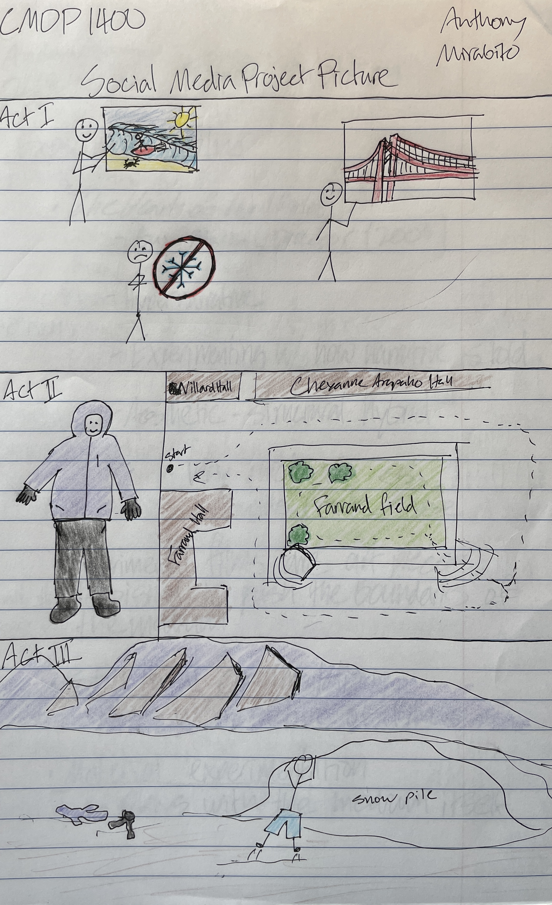

I chose TikTok as the platform for my social media short story. My main reason for using TikTok is that the app has a great text-to-speech feature that I thought would add a good comedic element to my story, and would also let me avoid recording my voice.
TikTok has a number of other features that also helped immensely with this project. The main advantage is ease of use. TikTok is designed to help creators pump out content as fast as possible and it really shows when you’re using the app. I also like the availability of music to be played over your videos (thanks Musical.ly).
Overall, TikTok is super easy to use and makes creating content very enjoyable.
To visualize my story, I drew a picture with pens and colored pencils. I am by no means artistically inclined when it comes to drawings. My best work is probably my physics diagrams from high school. That being said, my goal was to create a clear story map for my project. For the first part of the story, I used symbols to explain my background. In part two, I drew a map of the route that I would walk while filming my project. In part three, I drew a picture of me stripping down to shorts and jumping in the snow. This event never occured because I am a coward.
| Home | Photos of Three Key Themes | How My Photography Changed | Found Footage and Metaphor of Self Projects | Locative Media Project | Final Response |